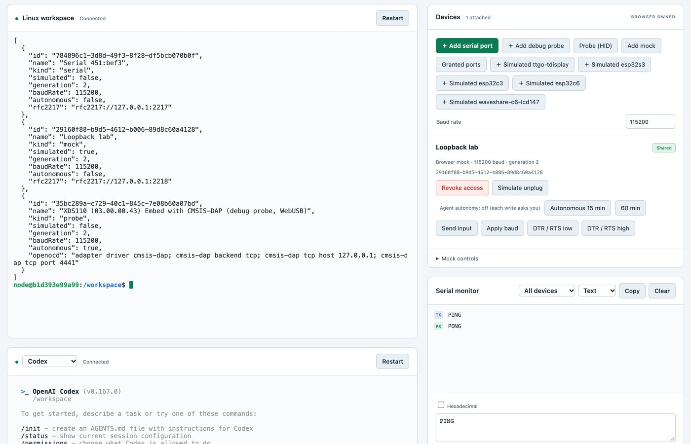

It writes the firmware, writes the tests, runs them, and fixes until everything is green.
But the code, the tests and the expected output all come from the same model. They share its blind spots.
Green is not the same as correct. Nobody touched a board.
So put a real board in the loop
The board does not share the model's blind spots. It has the last word.In part one we called it the oracle.
Boards are slow and scarce, so add an emulator
Emulator the fast stand-in
The same firmware file, run in software
Hundreds of times faster than real time
As many copies as you like
Same seed, same run, every time
Can be wrong: it is software too
⇄compared with each other
Real board the last word
The real chip, radio and timing
Real time, and flashing takes a minute
One per desk, one user at a time
Noise, temperature, a cable that wiggles
Is what ships
Go fast on the emulator, let the board decide. When the two disagree, one of them just taught you something; timings measured on the board go back into the emulator.
1
Two emulators
a fast stand-in for the board: one for single boards, one for whole networks
esp32sim: an ESP32 board, in software
Runs the board's real firmware file, the same binary you would flash, starting from the chip's own boot code.
ESP32-S3, C3 and C6, with screens, LEDs, buttons and the low-power radio.
On your laptop, in a browser tab, or as a simulated board in DeviceDock.
How do we know it is right?Compared with things the model did not write:
0 mismatchesin 1.26 million instructions, compared with the standard disassembler
never diverged11 000 steps run side by side with the real chip, over a debug cable
205 of 208boot lines identical to a real ESP32-C3's (C6: 203 of 204)
Live: esp32sim in the browser, booting a real board's firmware: display, LEDs, buttons, synth. ↓ one more
Extra: two emulated ESP32-C6 boards running Contiki-NG: one is the network root, the other joins and sends a UDP request every 10 s.
Cooja-NG: a whole wireless network, in software
Every node runs its real firmware file: Contiki-NG, and also Zephyr, RIOT and OpenThread.
A simulated radio connects them: hundreds of nodes on one laptop.
Same seed, same run: a bug that shows up once shows up every time.
~1600×faster than real time: two nodes on Apple Silicon (300–700× on the ARM boards)
93 / 93of Contiki-NG's own simulation tests pass
14 of 15a four-year-old "flaky" test, turned into a number an agent could fix
In DeviceDock it is the command cngsim: try the image before you flash it. On hello-world it prints exactly what the real LaunchPad prints.
Live: Cooja-NG in the browser: 100 nodes, each running real Contiki-NG firmware, forming a network. ↓ one more
Extra: three different chips in one network: Sky (MSP430), CC2538 and nRF52840 (ARM), each with its own Contiki-NG build.
2
DeviceDock
getting the agent to a real board, safely
The agent belongs in a box. The board is on your USB.
An agent runs shell commands for you. Keep it in a sandbox, away from your files and keys.
But then it cannot reach the board, and you don't want to hand it every USB port you have.
DeviceDock: your browser lends the agent one board
What the agent gets
A serial port address that esptool, idf.py and pyserial use unchanged, reset into the bootloader included
A tunnel so OpenOCD can flash a LaunchPad through its debug probe
device list, send, monitor, also as MCP tools
What it does not get
No USB device, no access to your laptop, no Docker socket
Boards you did not share
Your logins: agents log in inside the sandbox
One request, step by step
A TI LaunchPad running Contiki-NG, from DeviceDock's quick start
youAsk: "Make hello-world print a counter, flash it to the LaunchPad and show me the output."
agentEdits hello-world.c and builds it make TARGET=simplelink BOARD=launchpad/cc1352r1
agentTries it on the simulator first cngsim run hello.cc1352r1-launchpad -t 25s
youClick Approve in the page when it opens the debug probe device probe-open <id>
agentFlashes through the browser with OpenOCD: about a minute
boardRuns it and prints what it really does device monitor <id> --seconds 20
agentReports what ran where: "on the simulator" and "on the board" are separate claims
With Autonomous switched on for the board, step 4 needs no click and the agent can go round again by itself.
What it looks like

1Terminals into the sandbox: a shell, and the agent
2Devices you shared: serial ports, debug probes, simulated ESP32 boards
3Per device: take it back, or let the agent work alone for 15 or 60 minutes
4Serial monitor: every byte in and out
One command starts it all: ./devicedock.sh
You approve each write, or let it run for a while
Default: you click
Every time the agent writes to a real board, the page asks you first.
Opening a debug probe needs one approval.
Simulated boards need none: nothing can break.
Autonomous: 15 or 60 minutes
You switch it on for one board. At most 2 hours.
It ends by itself, or when you unplug, take the board back or close the tab.
Meanwhile the agent builds, flashes and reads on its own.
Always: one user per board at a time, and no automatic retries of a write that may already have happened.
What works today, and what is still open
✓ESP32: esptool talks to a real board through the browser: into the bootloader, reads the chip7 Nov
✓TI LaunchPad: flashed and verified through its debug probe; its output reaches the agent9 Nov
✓cngsim: hello-world prints the same as on the real LaunchPad
✓Simulated ESP32 boards in the page: console, REPL, reset
○Still open: writing flash on a real ESP32 · MicroPython's mpremote · flashing a simulated ESP32 through the dock · cngsim nodes as devices · an agent doing the whole loop alonetoday?
The open row is a task list.
3
Your afternoon
half a day, a board or a simulator, and a coding agent
The afternoon in four steps
1
Pick a setup
An ESP32, a LaunchPad, your own board, or just a simulator.
→
2
Pick a task
From the next slides, or your own idea, as long as it has a "done when".
→
3
Let the agent loop
It builds, flashes and reads. You watch, approve and steer.
→
4
Show the evidence
Two minutes at the end: what the board said, not what the agent said.
Step 1: four ways in
Everyone runs the same DeviceDock. Pick what is on your desk.
ESP32 board
image: esp32 or full
Share its serial port. Flash with idf.py -p <address from device list> flash monitor.
TI LaunchPad
image: contiki
Share the serial port and the debug probe. The quick start's hello-world is the worked example.
Simulator only
any image
＋ Simulated esp32s3 / c3 / c6 in the page, or cngsim for Contiki-NG boards and networks.
Your own board
any image
Any serial console works, and CMSIS-DAP debug probes. esptool, OpenOCD and mpremote are installed.
# the sandbox image is 3–12 GB: start this now if you have not
export DEVICEDOCK_VARIANT=full # or base · contiki · esp32
./devicedock.sh # then in its console: o (page link) · login claude · sh
cd /workspace && claude # the agent reads /workspace/AGENTS.md
Three rules for the afternoon
1 Done means evidence the model did not write
The board's own output, a diff against a real boot, "N of M" runs. Green tests the agent wrote itself do not count.
2 Say where it ran
"On the simulator" is not "on the board". When they differ, decide: emulator bug, or a fact about the board? Write it down.
3 Keep the receipts
The command, the log, the commit, and where the agent was wrong. If it fails the same way three times, it stops and you decide.
Before you flashBack up the factory firmware of a board you care about (quick start §4). Autonomous mode is per board, opt-in, and switches itself off.
Step 2: suggested tasks — start here
1First loop
warm-upESP32LaunchPad
Ask the agent to make hello-world print a counter, build it, flash it and show you the output. Then switch on Autonomous and let it make the next change alone.
Done when the board's own serial output shows the change.
2Sim first, then silicon
ESP32esp32sim
Run one image on a simulated ESP32 and on a real one. Let the agent compare the two boot logs and sort every difference: emulator bug, or a fact about the board?
Done when every line of the difference is explained. Bonus: an esp32sim issue with the log.
3Make a flaky test a number
cngsimno board needed
Pick a Contiki-NG test or example, run it in cngsim with many different seeds, and let the agent hunt whatever fails.
Done when you have "N of M" before and after, and the seed that reproduces it.
Step 2: suggested tasks — go further
4Give the agent eyes
any boardyour own
Write a self-test firmware whose output a program can check: pins, LEDs, buttons, sensors. Let the agent work out how your board is wired from what it reports.
Done when the pin map comes from the board, not from a photo or a guess from the datasheet.
5Two nodes, one radio
2 × LaunchPadcngsim
Build Contiki-NG's rpl-udp example, prove it in cngsim with two nodes, then flash a server and a client onto two real boards.
Done when both real boards agree, and you can say what differed from the simulation.
6Close an open row
your ownDeviceDock
Verify what the dock has not yet: writing flash on a real ESP32, mpremote, a new debug probe. Or make a cngsim node show up in device list.
Done when a verification note with the log is in a pull request.
Step 4: two minutes, one receipt
1What you asked for
The task, the board, the prompt that got it going.
2The evidence
The board's output, the diff, the number. Say where it ran.
3Where the agent was wrong
And what caught it: the board, the simulator, or you.
Found a bug in esp32sim, Cooja-NG or DeviceDock? An issue with the log is the best receipt of the day.
Over to you
Joakim Eriksson, RISE
github.com/joakimeriksson/devicedock mikroverk.github.io/esp32sim mikroverk.github.io/cooja-ng part one: joakimeriksson.github.io/pres/agentic-hw/